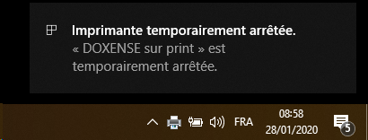
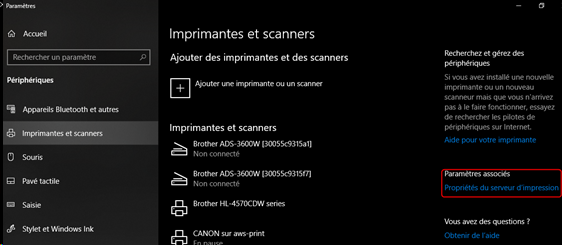
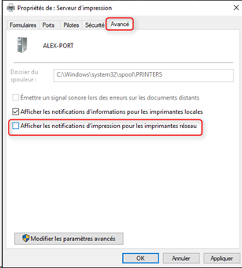

Prérequis serveurs
Editions de Windows Server® compatibles
-
MS Windows Server® 2016
-
MS Windows Server® 2019
-
MS Windows Server® 2022
Watchdoc est également compatible avec les environnements virtuels (notamment VMWare® et Hyper-V®).
La version Core de MS Windows Server® n'est pas supportée.
Microsoft Visual® C++ 2013 est requis.
Microsoft® .NET Framework 4.8 est obligatoire.
Langages analysés
Watchdoc prend en charge les pilotes d'impression de type 3. Les pilotes de type 4 ne sont pas supportés.
Watchdoc® analyse les langages suivants :
-
PJL
-
PCL 5, 5c, 5e
-
PCL 6 (PCL-XL)
-
HPGL2
-
Postscript DSC (Document Structuring Conventions)
-
ESC/P 2
-
EMF
-
XPS (cependant, compte tenu des limitations de ce format sur certaines fonctions (transformation de spool et impression à la demande inter-serveur notamment), nous ne recommandons pas son utilisation.
Les fonctions de prévisualisation sont disponibles avec les formats EMF et PCL6.
Le découpage des pages d'un document est possible avec des impressions effectuées en langage PCL6 uniquement.
La fonction de file virtuelle (Impression à la demande) et la redirection des impressions ne peuvent être utilisées qu'avec des imprimantes :
- utilisant le même langage ;
- ayant des fichiers d'impression compatibles.
Serveur d'application
Watchdoc fonctionne avec un serveur Internet Information Server (IIS) disposant des composants suivants :
-
Web-Server
-
Web-ASP
-
Web-Metabase,
-
Web-Windows-Auth
Microsoft .NET Framework 4.8 doit obligatoirement être installé sur ce serveur.
Serveur d'annuaire
Les serveurs d'annuaires compatibles sont les suivants :
-
Microsft Entra ID® (Azure Active Directory)
-
Active Directory®
-
Open LDAP® : validation nécessaire du schéma
-
Base MS SQL®
-
Fichier XML
-
Annuaire Proxy : il assure la correspondance entre le numéro de badge et le login utilisateur, et/ou entre le nom saisi dans le copieur et le login utilisateur (remontée des copies via SNMP, copicodeIP) si le numéro de badge ou le copicodeIP n'est pas présent dans l'un des attributs de l'annuaire LDAP.
Dans le cas où vous utilisez tout autre type d'annuaire, merci de nous contacter pour une validation préalable.
Watchdoc peut gérer plusieurs annuaires utilisateurs, sous réserve qu'il n'y ait pas d'homonymes entre eux.
Serveur de données
Watchdoc® stocke les statistiques et le Porte-Monnaie Virtuel (PMV) des utilisateurs dans deux bases de données qui reposent sur des systèmes de gestion de bases de données (SGBD).
Les serveurs de bases de données compatibles avec Watchdoc sont les suivants :
-
MS SQL Server® (Express/Standard/Enterprise) 2012, 2014, 2016, 2017, 2019 et 2022 avec les prérequis suivants :
-
Mode mixte
-
SQL browser (si SQL distant avec instance nommée)
-
le langage utilisé doit être "Case Insensitive" (ex. : French_CI_AS).
Dans le cas où le serveur SQL est distant (en modes classique ou déporté), vérifiez que TCP/IP est activé dans SQL Server Configuration Manager.
Vérifiez également que le service SQL Browser est démarré afin que Watchdoc puisse afficher la liste des serveurs et les instances disponibles.
-
les instances créées avec SQL Express ne peuvent dépasser les 10Go.
-
-
PostgreSQL® 17
N.B. : Doxense® n'assure pas le support pour le paramétrage du SGBD PostgreSQL®
-
SQLite® 3.x
-
Si vous utilisez Report Services for Watchdoc (WRS) pour la génération d'un rapport complet des impressions, il convient d'installer Reporting Services, inclus dans MS SQL Server® (version minimum : 2008 R2).
La fonction d'impression à la demande interserveur repose sur une base de données MS SQL Server®.
Watchdoc n'est pas compatible avec le SGBD Oracle.
Notifications d'impression
La fonction de notification des impressions par courriel de Watchdoc repose sur le protocole SMTP.
Les services suivants doivent être activés :
-
MSG.exe qui permet l'affichage de la fenêtre de message ;
-
sur les postes clients, la valeur de la clé suivante doit être égale à 1 :
HKLM\SYSTEM\CurrentControlSet\Control\TerminalServer
Lorsque la file d'impression MS Windows est contrôlée par Watchdoc, elle est mise en pause par Watchdoc. Dès lors qu'un utilisateur lance une impression, une notification MS Windows l'informe que le périphérique d'impression est en pause, ce qui peut prêter à confusion. Nous vous recommandons donc de désactiver cette notification.

Exemple de notification sous MS Windows 10
Procédure automatisée
Si votre parc de postes est sous MS Windows 7 ® ou MS Windows 8®, nous vous conseillons de changer la valeur de la clé de registre suivante en la passant de de 1 à 0 :
HKEY_CURRENT_USERS\Printers\Settings\EnableBalloonNotificationsRemote
Cette action (déployée sur tous les postes concernés) désactivera les infobulles pour les impressions envoyées sur le serveur d'impression.
Procédure manuelle
-
Accédez au serveur d'impression Watchdoc® en tant qu'administrateur ;
-
accédez aux Paramètres Windows, puis Périphériques et Imprimantes et scanners ;
-
Dans Imprimantes et scanners, cliquez sur Propriétés du serveur d'impression :

-
Dans l'interface Propriétés du serveur d'impression, cliquez sur l'onglet Avancé;
-
décochez la case "Afficher les notifications d'impression pour les imprimantes réseau" :

-
vérifiez depuis l'un des postes que la notification ne s'affiche plus lors du lancement d'un travail d'impression.
Antimalware, antivirus et outils de sécurité
Les antimalware, antivirus et autres outils garantissant la sécurité du serveur d'impression (Windows® Defender, Bit Defender®, Kaspersky®, MacAfee®, par exemple, doivent être désactivés sur le dossier d'installation de Watchdoc® ainsi que sur le dossier contenant les spools. Cette désactivation repose sur des règles d'exclusion pour que l'activité d'impression de Watchdoc ne soit pas ralentie par l'analyse effectuée par ces outils.